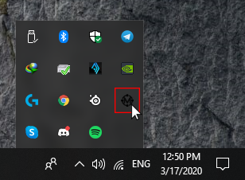
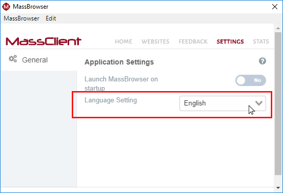

How to Open/Close MassBrowser
You could open MassBrowser client by double clicking on the desktop shortcut and you could close the application GUI and it will continue running in the background.

If you need to access MassBrowser client or you want to stop the application completely after you close the application GUI, follow these steps to open the application again:
-
click on "Show hidden icons"

-
Find MassBrowser icon and press right click on the icon
-
Now you can re-open the application GUI by clicking on "Open Settings" or you can close the MassBrowser completely by clicking on "Exit".

How to Unblock a Certain Page
You need to have MassBrowser plugin installed on your Firefox to unblock a certain page that we are not currently supporting. If you are using the bundle version, the plugin is already installed and you should be able to see the plugin icon on the top right side of your Firefox window.
Click on the Massbrowser plugin and then click on "Unblock This Website". Now MassBrowser will remember to use Tor for this website.
Click on the Massbrowser plugin and then click on "Unblock This Website". Now MassBrowser will remember to use Tor for this website.

How to Change MassBrowser Language

You could change the settings of your MassClient in this page. At this moment we support English and Chinese. Use the drop down infront of the "Language Setting" to change your client language. You could always change this setting at anytime.